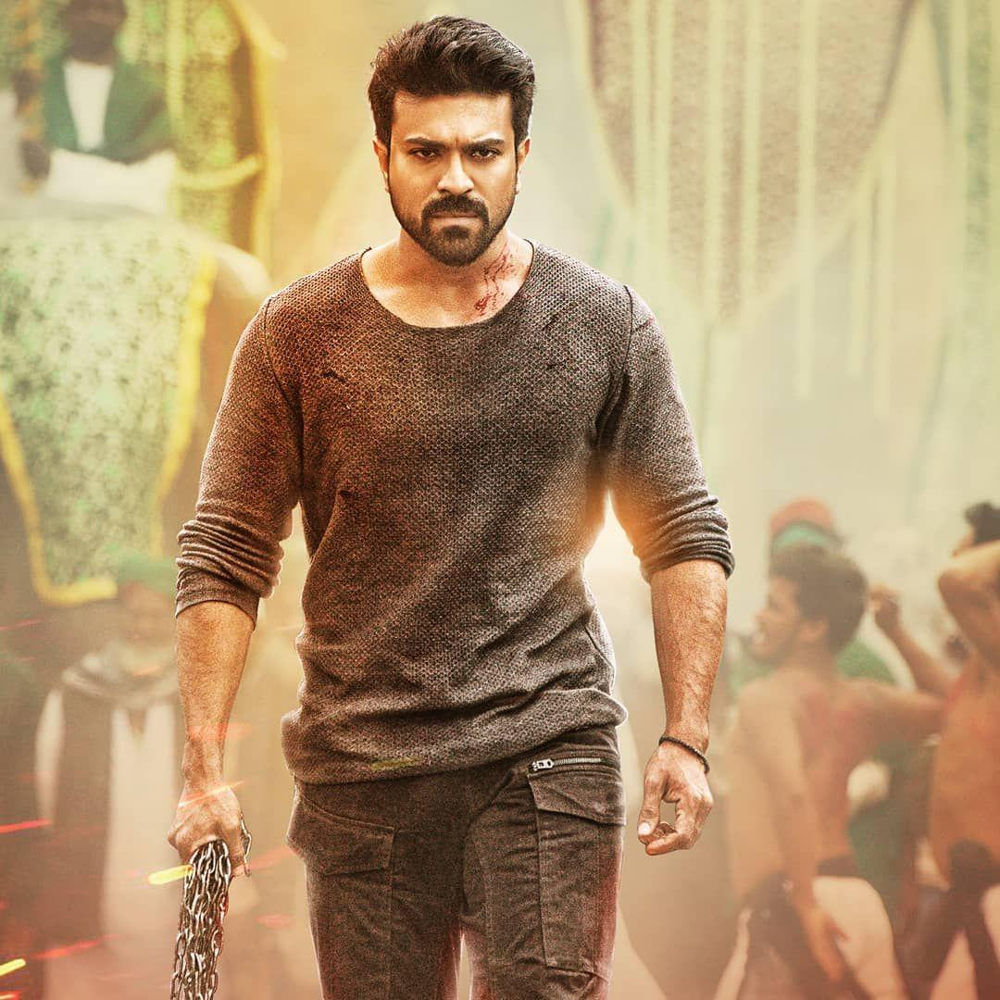

Konidela Ram Charan Teja, mostly known by his stage name Ram Charan, is an Indian actor, producer and entrepreneur who predominantly known for his works in Telugu-language film industry. He is one of the highest-paid actors in India.Ram charan made his acting debut with romantic action thriller film Chirutha (2007) and won the Filmfare Award for Best Male Debut in South for his performance in his first movie. Charan has received widespread critical acclaim and established himself as a leading Telugu film actor with commercially successful films like Racha (2012), Naayak (2013), Yevadu (2014), Govindudu Andarivadele (2014), Dhruva (2016), and Rangasthalam (2018).


His famous movie is RRR and famous song isNATTU NATTU